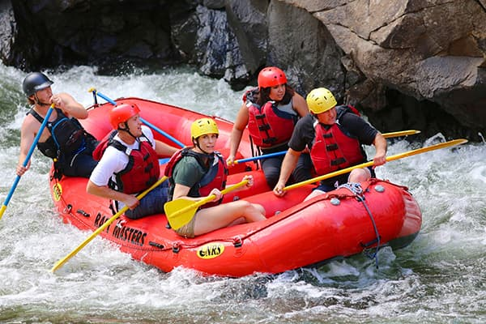

Encontre Sua Próxima Aventura!
Confira abaixo nossos 3 principais passeios e escolha o ideal para você e sua família.
Nossos Circuitos Principais

Ideal para iniciantes e crianças. Um percurso calmo de 2 horas focado na contemplação da natureza e segurança total.

Para quem busca mais ação! 3h30 de descida com muitas quedas de nível médio, exigindo bastante trabalho em equipe.

O circuito definitivo. 5 horas enfrentando canyons estreitos e corredeiras fortes. Recomendado para maiores de 18 anos.
Tabela Comparativa de Valores
| Passeio | Duração | Dificuldade | Idade Mínima | Preço |
|---|---|---|---|---|
| Circuito Família | 2 horas | Fácil (Classe I) | 6 anos | R$ 120,00 |
| Corredeiras do Dragão | 3h30min | Moderado (Classe II) | 14 anos | R$ 180,00 |
| Expedição Extrema | 5 horas | Difícil (Classe III) | 18 anos | R$ 250,00 |